{f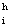}
{f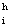} - сеточная функция, заданная в узлах сетки (1). Интерполяционный многочлен Лагранжа определяется следующими формулами (подробности см. в лекциях или в
[1,
2,
3]):
- сеточная функция, заданная в узлах сетки (1). Интерполяционный многочлен Лагранжа определяется следующими формулами (подробности см. в лекциях или в
[1,
2,
3]):Основная цель. Научиться строить интерполяции при помощи многочлена Лагранжа. Изучить влияние выбора интерполяционной сетки на сходимость процесса интерполяции.
Основные формулы метода. На отрезке [0,1] рассмотрим интерполяционную сетку:
| (1) |
Пусть f{f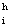} - сеточная функция, заданная в узлах сетки (1). Интерполяционный многочлен Лагранжа определяется следующими формулами (подробности см. в лекциях или в
[1,
2,
3]):
| (2) |
| (3) |
Таким образом, если заданы узлы интерполяционной сетки {x } и значения сеточной функции {f}, то многочлен Лагранжа определяется формулами (2) и (3) единственным образом.
} и значения сеточной функции {f}, то многочлен Лагранжа определяется формулами (2) и (3) единственным образом.
Будем рассматривать два варианта выбора интерполяционной сетки:
равномерная сетка: x (i-1).h, h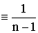, i=
(i-1).h, h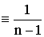, i=
Чебышёвская сетка: в этом случае узлы сетки совпадают с нулями полинома Чебышёва степени n (см. [3, 4]):

 [1- cos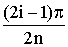], 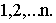
[1- cos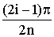], 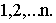Тестовые функции. Сеточные функции fh будем получать, проектируя на сетку (1) следующие непрерывные функции (все функции рассматриваются на отрезке [0,1], 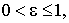 если не оговорены иные условия):
f11(x) 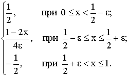
Требования к программе. Программа должна включать:
Построение интерполяционного многочлена Лагранжа по формулам (2), (3): а) на равномерной сетке, б) на Чебышёвской сетке.
Построение интерполяционного многочлена Лагранжа с использованием рекурентных формул (метод Невелле): а) на равномерной сетке, б) на Чебышёвской сетке.
Тестовые функции (по заданию преподавателя) с возможностью выбора параметра “”. Может быть реализован дискретный выбор по формуле =2-k, к=0,1,2,… (см. программу “NUM_METH”).
Возможность выбора числа узлов сетки N, допустим дискретный вариант: n=1+2к, к=2,3,4,… (см. программу “NUM_METH”).
Вывод погрешности интерполяции Err(f) на “контрольной” сетке с узлами:
| (4) |
Графику: одновременная отрисовка графиков функции f(x) и многочленов Лагранжа (x,(f)h), построенных вышеуказанными двумя способами; отрисовка узлов сетки {xi}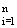. Предусмотреть возможность маштабирования графика: а) по исходной функции f(x); б) по всем функциям.
Задание для работы с программой. Провести численные расчеты, варьируя значения параметров и n; использовать все тестовые функции и все варианты интерполяции. Анализируя результаты расчетов, ответить на следующие вопросы:
Сходиться ли процесс интерполяции при помощи многочлена Лагранжа:
на равномерной сетке,
для Чебышевской сетки?
(Определение сходимости см. в Лекциях).
Сравнить между собой точность двух вариантов интерполяции (на равномерной и Чебышёвской сетках).
Основные критерии сравнения:
погрешность (4),
визуальная близость графиков функции f(x) и соответствующего интерполянта 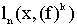
Во всех вышеперечисленных случаях оценить эффективность метода Невелле.
Все выводы необходимо аргументировать результатами численных расчетов и оформить в виде Отчета.
Калиткин Н.Н. Численные методы. Москва «Наука», 1978, -512с.
Самарский А.А. Введение в численные методы. Москва «Наука», 1987, -288с.
Самарский А.А., Гулин А.В. Численные методы. Москва «Наука», 1989, -430 с.
Бахвалов Н.С. Численные методы-I. Москва «Наука», 1975, -631 с.